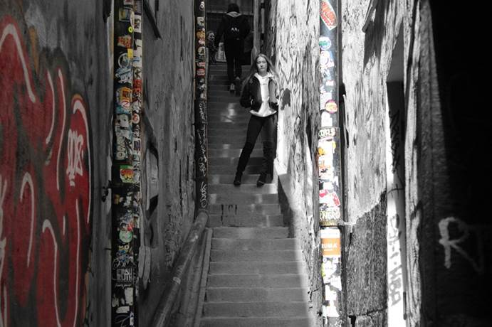
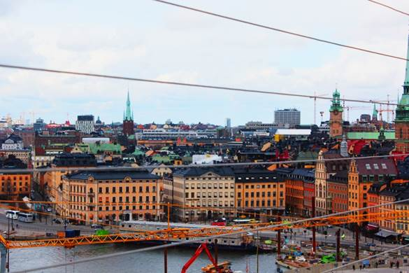

| Start | Olika typer av bilder | Tips & trix | Kontakt |
Om man vill ta olika typer av bilder så är Stockholm ett perfekt ställe.
Det finns fina byggnader, mystiska gränder och massa mer.
I dom smala och mörka gränderna kan man hitta coola vinklar men även små
detaljer att fota.
Här kommer några exempel:
